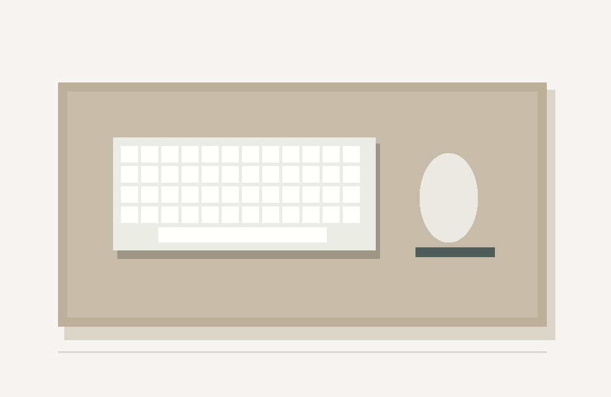

책상 위에 놓는 60×30cm 데스크 매트
가상 상품 · 포맷 검증용 예시 샌드 컬러의 매트 단품 구성
놓을 공간을 확인하세요
책상 위 가로와 세로 여유 공간을 확인해 주세요.
| 크기 | 60 × 30 cm |
|---|---|
| 색상 | 샌드 |
| 구성 | 매트 단품 |
구성 안내
도식의 키보드와 마우스 등은 배치 예시입니다. 상품 구성은 매트 단품입니다.

가상 상품 · 포맷 검증용 예시 샌드 컬러의 매트 단품 구성
책상 위 가로와 세로 여유 공간을 확인해 주세요.
| 크기 | 60 × 30 cm |
|---|---|
| 색상 | 샌드 |
| 구성 | 매트 단품 |
도식의 키보드와 마우스 등은 배치 예시입니다. 상품 구성은 매트 단품입니다.